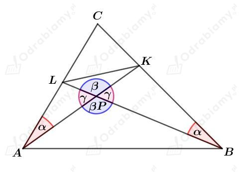
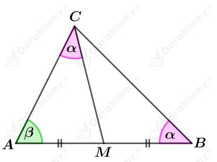

Rysunek:

Rozważmy trójkąty APL i BPK. Skoro miary dwóch odpowiadających kątów w trójkącie są równe, to miary trzecich kątów również są równe.
Zatem trójkąty APL i BPK są podobne na mocy cechy podobieństwa KKK.
Skoro te trójkąty są podobne, to mamy:
Dodatkowo:
Zatem trójkąty APB i KLP są podobne na mocy cechy podobieństwa BKB.
a)
Zauważmy, że
oraz
Zatem trójkąty APR i PBQ są podobne na mocy cechy podobieństwa KKK.
Stąd mamy:
b)
Zauważmy, że
gdyż są to kąty wierzchołkowe. Ponadto:
gdyż są to kąty naprzemianległe.
Zatem trójkąty PEB i PDF są podobne na mocy cechy podobieństwa KKK.
Stąd mamy:
czyli
c)
Zauważmy, że
oraz
Zatem trójkąty APR i CQR są podobne na mocy cechy podobieństwa KKK.
Stąd mamy:
d)
Zauważmy, że:
oraz:
Zatem trójkąty ABG i CDE są podobne na mocy cechy podobieństwa KKK.
Stąd mamy:
Rysunek:

Rozpatrując trójkąt ABC, wyznaczmy miarę kąta BCM. Mamy:
Rozpatrując trójkąt AMC, wyznaczmy miarę kąta AMC. Mamy:
Kąty AMC i CMB to kąty przyległe, zatem:
Zatem trójkąty AMC i ABC są podobne na mocy cechy podobieństwa KKK.
Stąd mamy:
Wiemy, że przekątne równoległoboku przecinają się w połowie. Stąd mamy:
oraz
Zatem odcinki AP i DE są środkowymi trójkąta ABD. Środkowe w trójkącie dzielą się w stosunku 2:1. Otrzymujemy:
Odcinki BF i CP są środkowymi trójkąta BCD. Środkowe w trójkącie dzielą się w stosunku 2:1. Otrzymujemy:
Zatem:
Mamy stąd:
Więc uzasadniliśmy, że odcinki DE i FB dzielą przekątną AC na trzy odcinki równej długości.
a)
Zauważmy, że
ponieważ są to kąty odpowiadające.
Mamy również:
ponieważ są to kąty wierzchołkowe.
Otrzymaliśmy zatem:
Uzasadniliśmy, że trójkąt BCD jest trójkątem równoramiennym.
b)
Zauważmy, że
ponieważ są tą kąty odpowiadające.
Mamy również:
Zatem trójkąty APC i BPD są trójkątami podobnymi na mocy cechy podobieństwa KKK.
Mamy stąd: